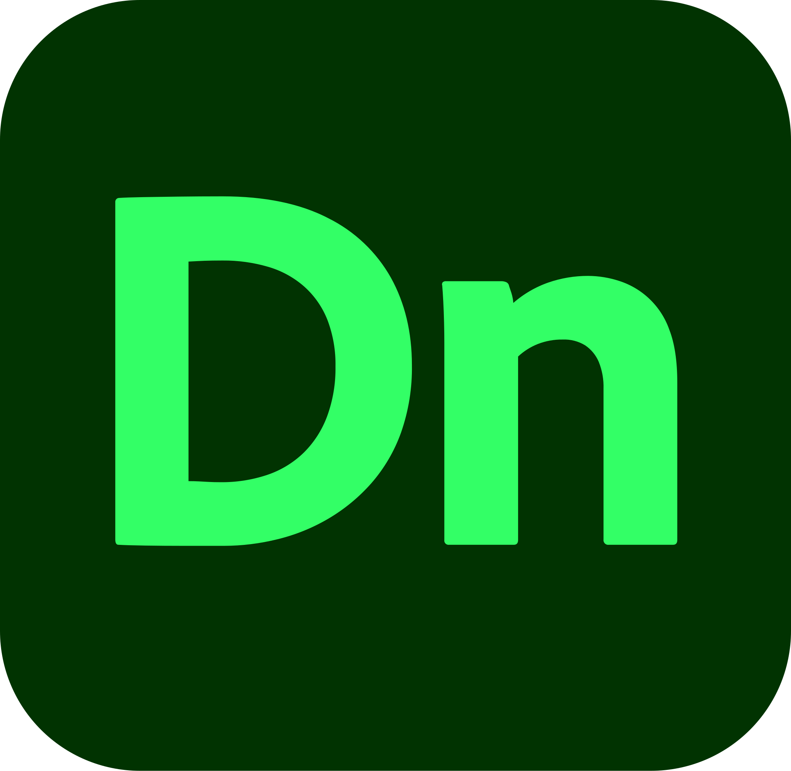
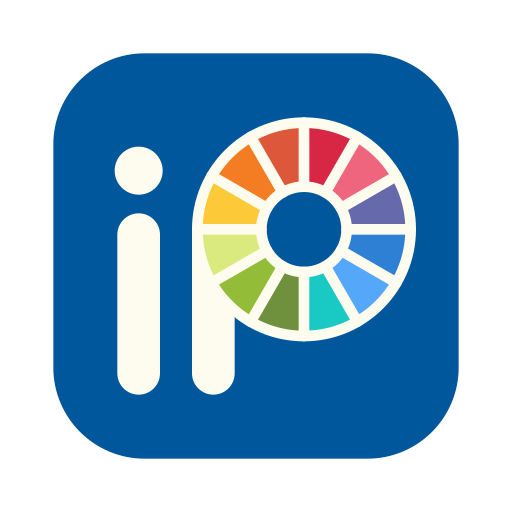
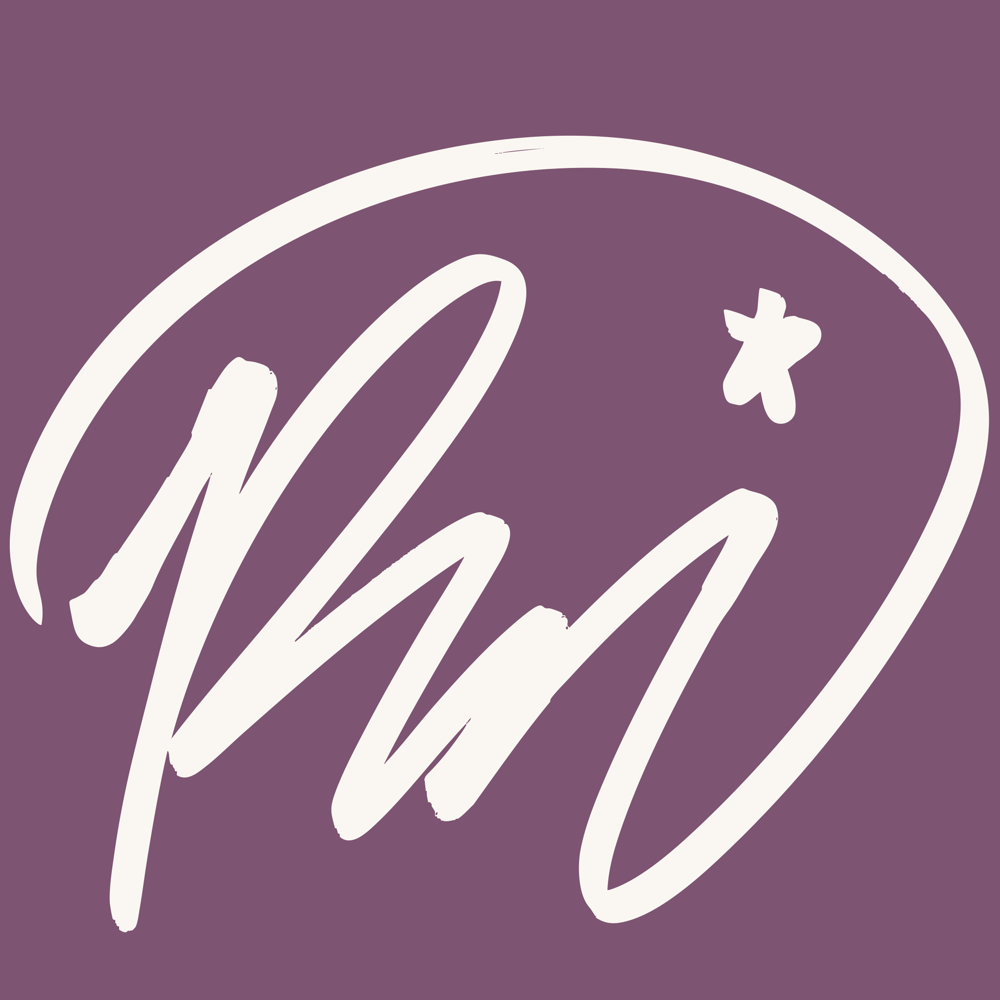
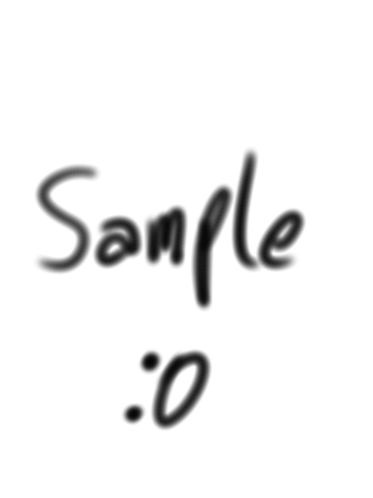

My tools
Design & Illustration





Nice to meet you, I’m Pedro Conde. I’m a New Media student with a passion for all forms of design, from graphic and web to UX/UI.
I’m driven by the desire to create meaningful visual experiences that connect with people, whether through thoughtful UX design or expressive illustration. My goal is to merge storytelling with usability, crafting work that feels both intuitive and emotionally resonant.
I want to use design as a tool not just for function, but for emotional impact. I’m especially interested in projects that blend creativity and empathy, where design solves problems, tells stories, and reflects the human experience in subtle, powerful ways.



I was born and raised in Manaus, the capital city of the Amazonas province in Brazil